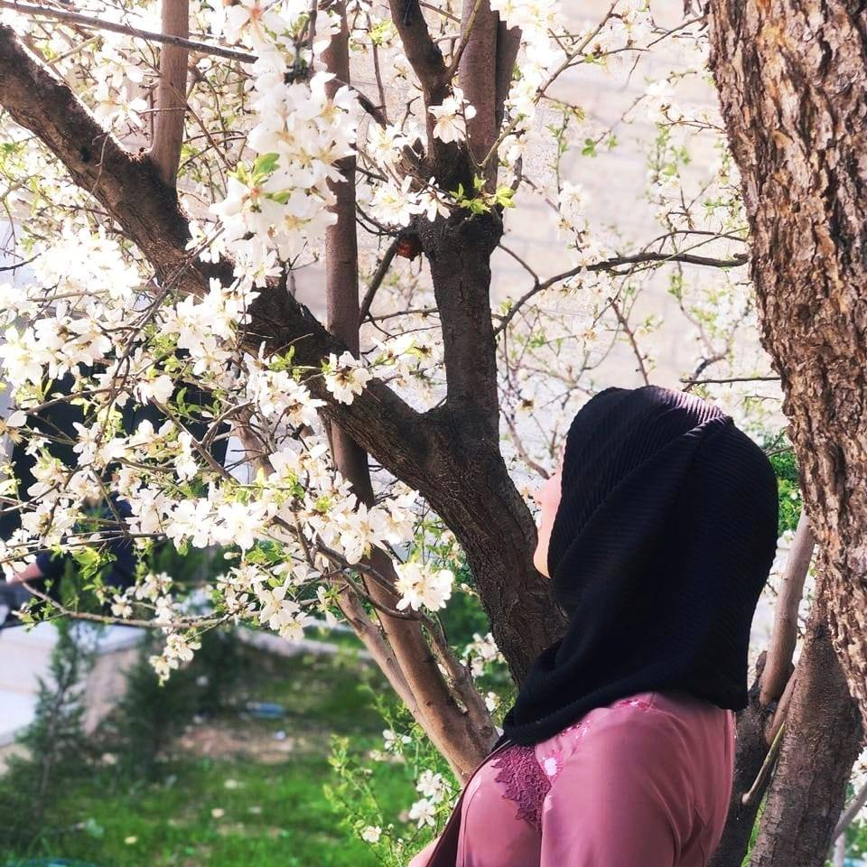

Jannat Natsheh
"Alone, by herself she built the kingdom that she wanted"❤️
ABOUT
I am a hardworking and ambitious junior studying Software Engineering at Bethlehem University. I have a great passion for learning new technologies, so I’m seeking opportunities in the industry in which I can practice my knowledge and experience, as well as ultimately benefiting the organization I work for. I am excellent at working with others to achieve a certain objective on time.

EDUCATION
2018 -present | Bethlehem UniversityB.A. Software Engineering. I am named to the Dean’s list in all semesters with a GPA of 3.60 and a major GPA of 3.67. I am an organizing committee member of Tech-club at BU.
2017 -2018 |General Secondary Education (Al-Injaz)
I finished Al-Injaz with a 94.1/100 average. I graduated from Bethlehem Secondary Girls school in Scientific stream with a 91.9/100 average.
Skills
Programming - Tools &Technologies- Java
- HTML
- CSS
- JavaScript
- C Language
Time Management
I have good time management skills. I can manage my time to deliver the tasks on time.
Communication
I have successfully completed Soliya's Connect Program, thereby developing my key knowledge, relationships, and 21st-century skills including communication, teamwork, and problem solving, demonstrating competence to engage effectively and constructively in global contexts and across various lines of difference.
Achievements
- Weather Website
- Beacon (Global Chat App)
- Chickens Hunting Game (OOP-JavaFX)
- Graph-Map Project (OOP-JavaFX)
This website was developed with React Js framework. It shows the weather forecast by calling weather API to get data and display it in a simple and clear way.
The GitHub repository:
https://github.com/JannatN/WeatherApp-react
Beacon is a global chat full-stack app (MERN stack) that aims to connect everyone around the world together. It includes two sides. The left one where the participants can chat, and on the right side the participant countries will appear as red dots on the World map and the number of users from each country, total users, total messages, and total participating countries will also be displayed.
The GitHub repository:
https://github.com/JannatN/Beacon
An interesting and funny game that was developed with Java and JavaFX. The hunter must try to hunt all chickens and get the diamond from them while having to avoid crazy big chickens' bullets.
The GitHub repository:
https://github.com/JannatN/ChickensHunting-Game
This project depends on finding the shortest path between two coordinates on the Bethlehem-Palestine map using Dijkstra algorithm. It was developed with Java and Spring Boot with a frontend map.
The GitHub repository:
Interests
Few of the books I read:
Besides reading, I love coding because it's changed my world. It gave me problem-solving skills, and a way to communicate with others on a technical level.
Quotes
Quotes I like:
- “Be yourself; everyone else is already taken.”
- “If you want to live a happy life, tie it to a goal, not to people or things.”
- “Never let the fear of striking out keep you from playing the game.”
- “Don’t cry because it’s over, smile because it happened.”
- “You must expect great things of yourself before you can do them.”
- “You can’t put a limit on anything. The more you dream, the farther you get.”

Bethlehem-Palestine

jannatfaisalnatsheh@gmail.com

0598030869